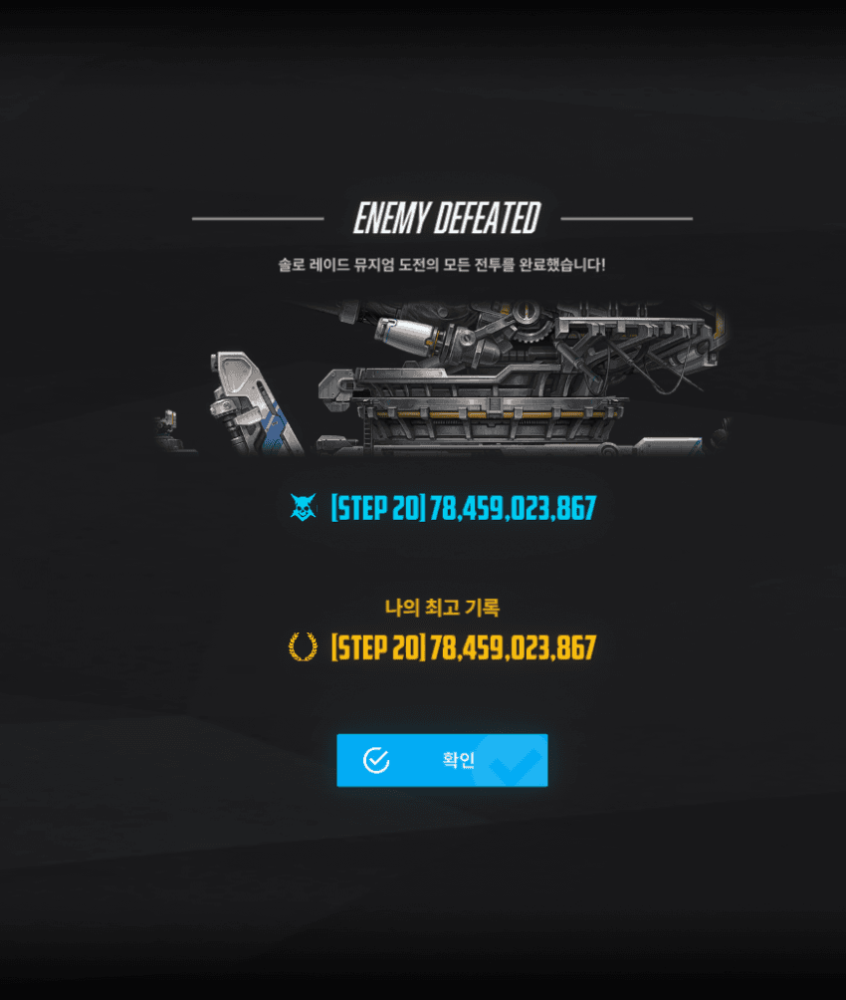
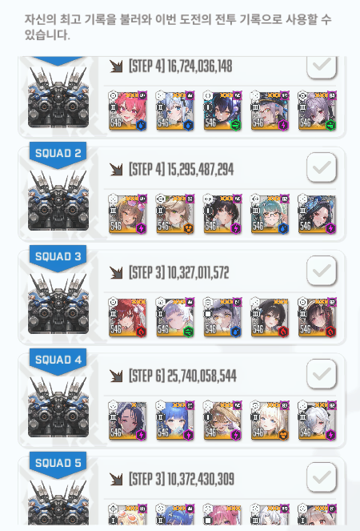

546 최저싱크 갱신 완료
화면 비율 21:9로 깼음
특이사항
나는 수프수프하다가 마지막에 수클수클로 끝냄
돌아이크신 첫 번째 기차 파츠 전부 깨면 안 됨, 이사벨 버스트 끝나고 아니스 잡고 파츠치면 18버스트 마지막 10초까지 가능
샷건 덱은 드레이크 선버, 수니스 죽을거 같을때 솔린 버스트 한 번씩 써주면 됨
원본: https://gall.dcinside.com/mgallery/board/view/?id=gov&no=5486211
백업 시각:


546 최저싱크 갱신 완료
화면 비율 21:9로 깼음
특이사항
나는 수프수프하다가 마지막에 수클수클로 끝냄
돌아이크신 첫 번째 기차 파츠 전부 깨면 안 됨, 이사벨 버스트 끝나고 아니스 잡고 파츠치면 18버스트 마지막 10초까지 가능
샷건 덱은 드레이크 선버, 수니스 죽을거 같을때 솔린 버스트 한 번씩 써주면 됨